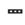

| SHO |
s.h.o. stands for :SEE HER various OCELOTS. |
|
Go talk to various professionals about doing the job. |
| 諸々 のxxx |
all kinds of xxx. ★★☆☆☆ |
| 諸君 |
Gentlemen!
★☆☆☆☆
F
Gentlemen! My friends! (Usually used by an upper person addressing a crowd of lower people, like a speech situation) |
| 諸 XXX |
various XXX ★☆☆☆☆ PRE PREFIX meaning 'various XXX' (usually used with countries, opinions, factions, problems ,etc.) (pretty much the same as the '々' kanji) |
| Meaning | Hint | Radical | |
|---|---|---|---|
| 暑 | hot place | TWO SUNS | 日 |
| 署 | government office | NETS |  |
| 諸 | various | TALK | 言 |
The place is hot because it has TWO SUNS.
The govt office is a beureacratic NET.
We TALK about various things.
|
many kinds, diverse
様々な 色々な 諸々の 各々の 多様な |
 KANJIDAMAGE
KANJIDAMAGE